CosMx Whole Transcriptome with GiottoDisk
Source:vignettes/cosmx_colon_wtx_giottodisk.Rmd
cosmx_colon_wtx_giottodisk.Rmd1 The dataset
NanoString CosMx Whole Transcriptome (WTx), human colon, slide S0, ~400 fields of view. The donor is a 56-year-old woman with a G1, stage IVA T3N0M1a primary sigmoid adenocarcinoma, so one section carries normal mucosa with intact crypts, the tumor mass, the desmoplastic stroma around it, and uninvaded muscularis propria.
The panel is 20,378 features: 18,935 RNA targets, 50 negative probes and 1,393 SystemControl probes. 493,834 cells are measured; 489,445 survive segmentation and filtering. The export is Bruker Spatial Biology’s CosMx Human Whole Transcriptome colon dataset.
| vendor file | what it holds |
|---|---|
S0_exprMat_file.csv.gz |
cell x gene counts, 839 MB gzipped, 18.75 GB raw |
S0-polygons.csv.gz |
one segmentation ring per cell |
S0_metadata_file.csv.gz |
per-cell centroid, area, counts |
S0_fov_positions_file.csv.gz |
FOV origins on the slide |
2 Packages
remotes::install_github("giotto-suite/GiottoUtils", ref = "dev")
GiottoUtils::suite_install("GiottoDisk", install_arrow = TRUE)
BiocManager::install("scran")The count matrix is read by cosmxscan, a small R package wrapping a Rust byte scanner. Its Rust source is compiled once when the package installs, and it is only needed to build the vault, not to read one that already exists.
remotes::install_github("drieslab/cosmxscan")3 Setup
suppressMessages({
library(arrow)
library(Giotto); library(GiottoClass); library(GiottoVisuals)
library(GiottoDisk)
library(data.table); library(ggplot2); library(cowplot)
library(terra)
})
# hide progress bars in the output, and run GiottoDisk's chunked
# operations (such as PCA) on 4 parallel workers
options(progressr.enable = FALSE, giottodisk.par_workers = 4)
COSMX_DIR <- "/path/to/cosmx/vendor" # the vendor .gz files, read only
VAULT <- "vault" # the GiottoDisk store
# open the vault as the data source for the Giotto object, and write files
# made by disk-backed operations straight into it instead of a temp folder
giotto_source <- gDirSource(VAULT)
setArtifactDumpDir(giotto_source)
plot_theme <- theme_classic(base_size = 9)
results_folder <- "results" # where every Giotto figure is saved as a PNG
instructions <- createGiottoInstructions(save_dir = results_folder,
save_plot = TRUE, show_plot = TRUE,
return_plot = FALSE)4 Ingest
4.1 Repairing the vendor export
The export carries two defects from the vendor that lead to an error
if not corrected. Both are repaired as the polygons are read through
passing correct_polygons() as the geometry
read_fun.
correct_polygons <- function(path, ...) {
polygons <- fread(path)
fov_pos <- fread(file.path(COSMX_DIR, "S0_fov_positions_file.csv.gz"),
select = c("FOV", "x_global_px", "y_global_px"))
# 1. six cells ship rings with fewer than three vertices
vertex_count <- polygons[, .N, by = cell]
polygons <- polygons[!cell %in% vertex_count[N < 3, cell]]
# 2. polygon global positions are written at twice their correct distance
# from the FOV origin while the outlines are already the right size, so
# each ring is translated rigidly rather than scaled
fov_x <- setNames(fov_pos$x_global_px, as.character(fov_pos$FOV))
fov_y <- setNames(fov_pos$y_global_px, as.character(fov_pos$FOV))
polygons[, fov_key := as.character(fov)]
polygons[, `:=`(ring_x = mean(x_global_px), ring_y = mean(y_global_px)),
by = cell]
polygons[, `:=`(cx = (fov_x[fov_key] + ring_x) / 2,
cy = (fov_y[fov_key] + ring_y) / 2)]
polygons[, `:=`(x_global_px = x_global_px + (cx - ring_x),
y_global_px = y_global_px + (cy - ring_y))]
polygons[, c("fov_key", "ring_x", "ring_y", "cx", "cy") := NULL]
# the geometry tile writer identifies the x/y columns by type, and CosMx
# ships pixel coordinates as integers
polygons[, `:=`(x_global_px = as.double(x_global_px),
y_global_px = as.double(y_global_px),
x_local_px = as.double(x_local_px),
y_local_px = as.double(y_local_px),
fov = as.integer(fov),
cellID = as.integer(cellID))]
# the store writer takes a lazy query, not a materialized table
dplyr::select(arrow::as_arrow_table(polygons), dplyr::everything())
}4.2 Create the giotto object
reader <- importCosMxDisk(cosmx_dir = COSMX_DIR, backend = giotto_source,
slide = 1, version = "v6", poly_pref = "csv")
# expression_path is read by the cosmxscan Rust scanner, which emits only
# nonzeros straight into a parquet store
g_cosmx <- reader@calls$create_gobject(
polygon_path = file.path(COSMX_DIR, "S0-polygons.csv.gz"),
poly_read_fun = correct_polygons,
metadata_path = file.path(COSMX_DIR, "S0_metadata_file.csv.gz"),
expression_path = file.path(COSMX_DIR, "S0_exprMat_file.csv.gz"),
feat_type = c("rna", "negprobes", "falsecode"),
split_keyword = list("^Negative", "^SystemControl"),
instructions = instructions)
g_cosmx5 Quality control and filtering
Comparison to vendor data
# spatial locations are the repaired polygon centroids, so comparing them
# against the vendor's own centers checks the repair where it actually landed
polygon_centroids <- getSpatialLocations(g_cosmx, output = "data.table")
vendor_centers <- fread(file.path(COSMX_DIR, "S0_metadata_file.csv.gz"),
select = c("cell", "CenterX_global_px",
"CenterY_global_px"))
setnames(vendor_centers, "cell", "cell_ID")
check_xy <- merge(polygon_centroids, vendor_centers, by = "cell_ID")
data.table(cells = nrow(check_xy),
median_offset_px = round(median(sqrt(
(check_xy$sdimx - check_xy$CenterX_global_px)^2 +
(check_xy$sdimy - check_xy$CenterY_global_px)^2)), 1))| cells | median_offset_px |
|---|---|
| 493826 | 25 |
Repaired centroids sit within a few tens of pixels of the vendor’s
own CenterX/Y_global_px; before the repair they are off by
~3,500.
ingest_summary <- rbindlist(lapply(c("rna", "negprobes", "falsecode"), function(ft) {
store <- GiottoClass::getExpression(g_cosmx, feat_type = ft, values = "raw")[]
agg <- dplyr::collect(dplyr::summarise(storeRead(store, output = "query"),
total = sum(value, na.rm = TRUE),
nnz = dplyr::n()))
data.table(feat_type = ft, plex = store@n_genes,
total = as.numeric(agg$total), nnz = as.numeric(agg$nnz))
}))
n_cells <- length(GiottoClass::getExpression(g_cosmx, feat_type = "rna",
values = "raw")[]@cell_ids)
cell_metadata <- pDataDT(g_cosmx)
per_cell_tx <- ingest_summary[feat_type == "rna", total] / n_cells
per_cell_neg <- ingest_summary[feat_type == "negprobes", total / plex] / n_cells
per_cell_fc <- ingest_summary[feat_type == "falsecode", total / plex] / n_cells
check <- data.table(
metric = c("cells", "FOVs", "mean transcripts / cell",
"mean unique genes / cell", "mean negative / plex / cell",
"mean false code / plex / cell", "signal-to-noise (global)"),
# vendor data summary for the CosMx Human FFPE Colon WTx dataset
readme = c(493834, 400, 1680.3, 1115.6, 0.034, 0.014, 2.60),
this_run = c(n_cells, uniqueN(cell_metadata$fov), per_cell_tx,
ingest_summary[feat_type == "rna", nnz] / n_cells,
per_cell_neg, per_cell_fc,
(per_cell_tx / ingest_summary[feat_type == "rna", plex]) / per_cell_neg))
check[, ratio := round(this_run / readme, 3)]
check[, `:=`(readme = round(readme, 2), this_run = round(this_run, 2))][]| metric | readme | this_run | ratio |
|---|---|---|---|
| cells | 493834.00 | 493826.00 | 1.000 |
| FOVs | 400.00 | 400.00 | 1.000 |
| mean transcripts / cell | 1680.30 | 1680.36 | 1.000 |
| mean unique genes / cell | 1115.60 | 1115.61 | 1.000 |
| mean negative / plex / cell | 0.03 | 0.03 | 1.007 |
| mean false code / plex / cell | 0.01 | 0.01 | 0.973 |
| signal-to-noise (global) | 2.60 | 2.59 | 0.997 |
cells reads 493,826 against the vendor’s 493,834 because
the six polygons with fewer than three vertices were dropped in 4.1 and
expression is sliced to the cells that still have a boundary.
g_cosmx <- addStatistics(g_cosmx, stats = "cell", expression_values = "raw")addStatistics() writes per-cell counts, genes detected
and total expression into the cell metadata. Those columns are enough to
draw the slide.
gene_limits <- quantile(pDataDT(g_cosmx)$nr_feats, c(0.01, 0.99), na.rm = TRUE)
p_slide <- spatPlot2D(g_cosmx, cell_color = "nr_feats",
color_as_factor = FALSE,
point_size = 0.25, point_shape = "border",
point_border_stroke = 0, coord_fix_ratio = 1,
background_color = "white",
show_plot = FALSE, return_plot = TRUE,
save_plot = FALSE) +
scale_fill_viridis_c(transform = "sqrt", limits = gene_limits,
oob = scales::squish, name = "genes\nper cell")
GiottoVisuals::all_plots_save_function(g_cosmx, p_slide,
default_save_name = "spatPlot2D",
base_width = 8, base_height = 7)
print(p_slide)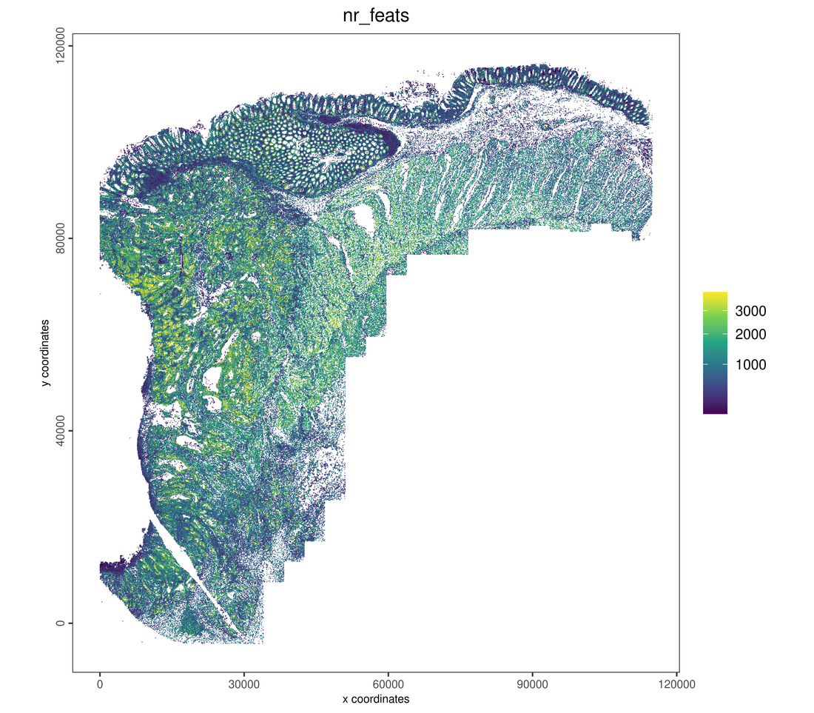
p_counts <- filterDistributions(g_cosmx, detection = "cells", method = "sum",
nr_bins = 90, show_plot = FALSE,
return_plot = TRUE, save_plot = FALSE) +
scale_x_log10() + plot_theme
p_genes <- filterDistributions(g_cosmx, detection = "cells",
method = "threshold",
expression_threshold = 1, nr_bins = 90,
show_plot = FALSE, return_plot = TRUE,
save_plot = FALSE) +
geom_vline(xintercept = 100, color = "#C44E52", linetype = "dashed") +
plot_theme
p_qc <- plot_grid(p_counts, p_genes, nrow = 1)
GiottoVisuals::all_plots_save_function(g_cosmx, p_qc,
default_save_name = "filterDistributions",
base_width = 10.6, base_height = 3.4)
print(p_qc)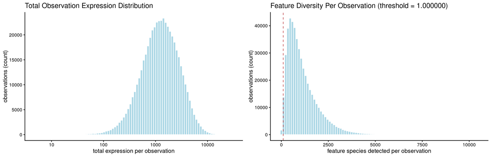
prefilter_qc <- pDataDT(g_cosmx)
qc_probs <- c(0, 0.5, 0.9, 0.99, 1)
qc_table <- data.table(
metric = c("counts per cell", "genes per cell"),
rbind(round(as.numeric(quantile(prefilter_qc$nCount_RNA, qc_probs,
na.rm = TRUE)), 1),
round(as.numeric(quantile(prefilter_qc$nr_feats, qc_probs,
na.rm = TRUE)), 1)))
setnames(qc_table, 2:6, c("min", "median", "q90", "q99", "max"))
qc_table| metric | min | median | q90 | q99 | max |
|---|---|---|---|---|---|
| counts per cell | 5 | 1258 | 3455 | 7090 | 29055 |
| genes per cell | 2 | 895 | 2219 | 3936 | 10420 |
g_cosmx <- filterGiotto(g_cosmx,
expression_threshold = 1,
feat_det_in_min_cells = 100,
min_det_feats_per_cell = 100)
g_cosmx6 Normalization and dimension reduction
# PC1 is a depth axis (see the figure below), so PCs 2:20 are what the
# neighbor graph and UMAP in section 7 use. SEED is reused by every
# stochastic step.
SEED <- 1234
g_cosmx <- normalizeGiotto(g_cosmx, scale_feats = FALSE, scale_cells = FALSE,
scalefactor = 6000)
g_cosmx <- addStatistics(g_cosmx, stats = c("cell", "feature"))
g_cosmx <- calculateHVF(g_cosmx, method = "cov_groups",
nr_expression_groups = 20, zscore_threshold = 1.1,
n_top_feats = 2000, show_plot = FALSE,
save_plot = FALSE, return_plot = FALSE,
verbose = FALSE)
gene_metadata <- fDataDT(g_cosmx)
head(gene_metadata[hvf == "yes", feat_ID])## [1] "A4GNT" "AAAS" "AAGAB" "ABAT" "ABCA10" "ABCA12"
g_cosmx <- runPCA(g_cosmx, feats_to_use = "hvf", scale_unit = TRUE,
center = TRUE, ncp = 20, method = "auto", set_seed = TRUE,
seed_number = SEED, verbose = FALSE)
saveGiotto(g_cosmx, name = "pca", overwrite = TRUE, verbose = FALSE)scale_feats and scale_cells stay
FALSE because scaling densifies;
scale_unit = TRUE inside runPCA() standardizes
without materializing.
screePlot(g_cosmx, ncp = 20, verbose = FALSE)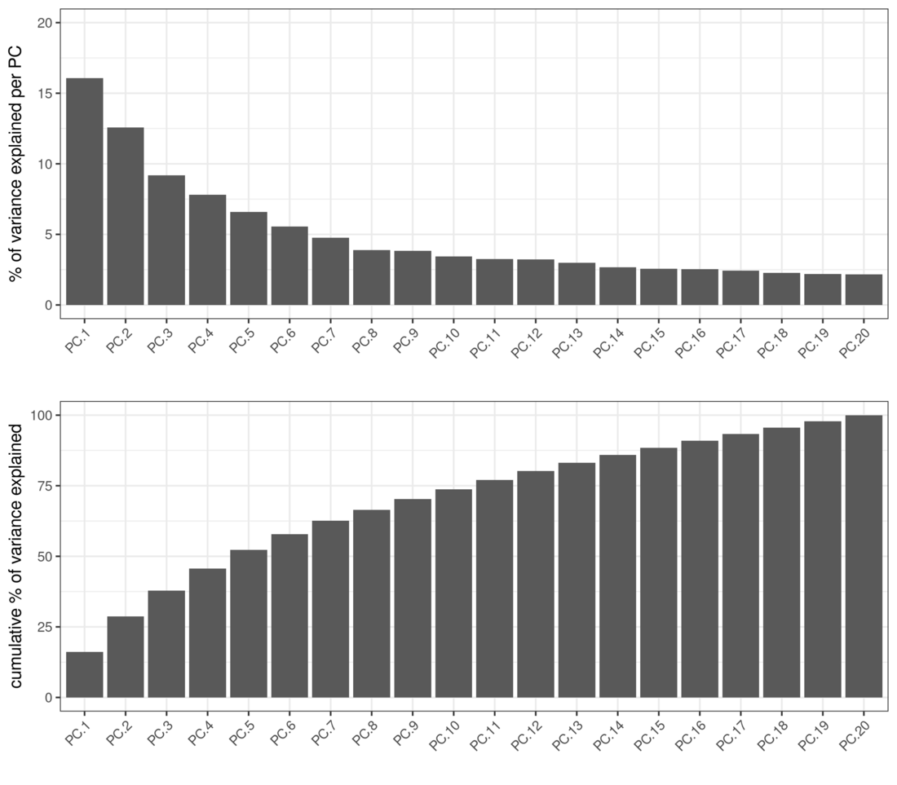
cell_metadata <- pDataDT(g_cosmx)
pc_matrix <- getDimReduction(g_cosmx, reduction_method = "pca",
output = "matrix")
shared_cells <- intersect(rownames(pc_matrix), cell_metadata$cell_ID)
cell_depth <- cell_metadata$nCount_RNA[match(shared_cells,
cell_metadata$cell_ID)]
pc_depth_cor <- data.table(
pc = seq_len(ncol(pc_matrix)),
abs_cor = abs(as.numeric(cor(pc_matrix[shared_cells, , drop = FALSE],
log10(pmax(cell_depth, 1))))))
ggplot(pc_depth_cor, aes(pc, abs_cor, fill = abs_cor > 0.5)) +
geom_col(width = 0.75) + geom_hline(yintercept = 0.5, linetype = "dashed") +
scale_fill_manual(values = c(`FALSE` = "#BBBBBB", `TRUE` = "#C44E52"),
guide = "none") +
scale_x_continuous(breaks = pc_depth_cor$pc) +
labs(x = "principal component",
y = expression("|correlation| with log"[10] * " total counts"),
subtitle = sprintf("PC1 |r| = %.3f | PCs 2:20 used downstream",
pc_depth_cor$abs_cor[1])) + plot_theme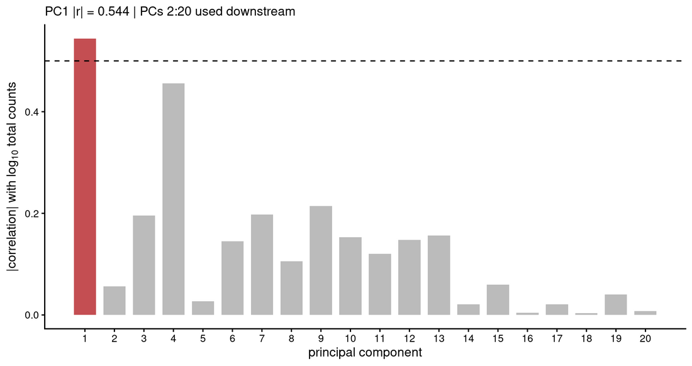
PC1 tracks depth at |r| = 0.544, so it is dropped. Decide this from the figure on any new round rather than from habit.
7 Neighbors, UMAP, clustering
g_cosmx <- createNearestNetwork(g_cosmx, k = 30, dimensions_to_use = 2:20,
engine = "hnsw", ef = 400,
n_threads_build = 1, verbose = FALSE)
g_cosmx <- doLeidenCluster(g_cosmx, name = "leiden_clus", resolution = 1,
n_iterations = 100, set_seed = TRUE,
seed_number = SEED)
g_cosmx <- runUMAP(g_cosmx, dimensions_to_use = 2:20, n_neighbors = 30,
min_dist = 0.3, spread = 1, n_sgd_threads = 0,
nn_engine = "annoy", set_seed = TRUE, seed_number = SEED,
verbose = FALSE)
saveGiotto(g_cosmx, name = "processed", overwrite = TRUE, verbose = FALSE)
cell_metadata <- pDataDT(g_cosmx)
cell_metadata[, clus := factor(leiden_clus,
levels = sort(unique(as.integer(leiden_clus))))]
CLUS_LEVELS <- levels(cell_metadata$clus)
LEIDEN_PAL <- setNames(getDistinctColors(length(CLUS_LEVELS)), CLUS_LEVELS)
data.table(clusters = uniqueN(cell_metadata$clus),
cells = nrow(cell_metadata),
smallest = min(cell_metadata[, .N, by = clus]$N),
largest = max(cell_metadata[, .N, by = clus]$N))| clusters | cells | smallest | largest |
|---|---|---|---|
| 24 | 489445 | 5001 | 54831 |
p_umap_clusters <- plotUMAP(g_cosmx, cell_color = "leiden_clus",
cell_color_code = LEIDEN_PAL,
point_size = 0.25, point_alpha = 0.4,
point_shape = "border", point_border_stroke = 0,
show_center_label = FALSE,
show_plot = FALSE, return_plot = TRUE,
save_plot = FALSE)
p_umap_genes <- plotUMAP(g_cosmx, cell_color = "nr_feats",
color_as_factor = FALSE,
cell_color_gradient = "viridis",
gradient_style = "sequential",
point_size = 0.25, point_alpha = 0.4,
point_shape = "border", point_border_stroke = 0,
show_plot = FALSE, return_plot = TRUE,
save_plot = FALSE)
p_umap_genes <- p_umap_genes +
scale_fill_viridis_c(transform = "log10", name = "genes\nper cell")
p_umaps <- plot_grid(p_umap_clusters, p_umap_genes, nrow = 1,
rel_widths = c(1, 0.95))
GiottoVisuals::all_plots_save_function(g_cosmx, p_umaps,
default_save_name = "UMAP",
base_width = 13, base_height = 5.4)
print(p_umaps)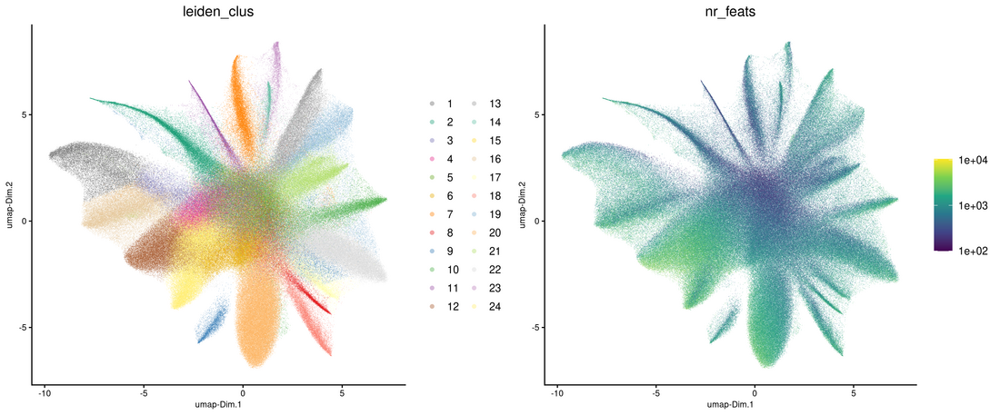
8 Markers
findScranMarkers_one_vs_all() compares each cluster
against the pooled remainder and returns a ranking column,
which orders the genes within each cluster.
scran_markers <- findScranMarkers_one_vs_all(g_cosmx,
cluster_column = "leiden_clus",
expression_values = "normalized",
verbose = FALSE)
markers_de <- scran_markers[
, .(feats, cluster = as.character(cluster), logFC, p_value = p.value, FDR,
ranking)]
markers_de <- markers_de[logFC >= 0.25 & FDR <= 0.05][order(cluster, ranking)]
data.table(clusters = uniqueN(cell_metadata$clus),
marker_rows = nrow(markers_de),
clusters_with_markers = uniqueN(markers_de$cluster))
head(markers_de, 5)| clusters | marker_rows | clusters_with_markers |
|---|---|---|
| 24 | 1924 | 23 |
| feats | cluster | logFC | p_value | FDR | ranking |
|---|---|---|---|---|---|
| KRT8 | 1 | 4.043495 | 0 | 0 | 1 |
| CKB | 1 | 3.857217 | 0 | 0 | 2 |
| FABP1 | 1 | 3.523662 | 0 | 0 | 3 |
| LGALS4 | 1 | 3.366537 | 0 | 0 | 4 |
| PIGR | 1 | 3.264485 | 0 | 0 | 5 |
top_markers <- markers_de[order(cluster, ranking)][, head(.SD, 10), by = cluster]
cluster_table <- merge(
cell_metadata[, .(cells = .N), by = .(cluster = as.character(clus))],
top_markers[, .(top_genes = paste(feats, collapse = ", ")), by = cluster],
by = "cluster", all.x = TRUE)
cluster_table[is.na(top_genes), top_genes := "(no markers passed the filter)"]
cluster_table[, cluster := factor(cluster, levels = CLUS_LEVELS)]
setorder(cluster_table, cluster)
cluster_table[]| cluster | cells | top_genes |
|---|---|---|
| 1 | 16419 | KRT8, CKB, FABP1, LGALS4, PIGR, ITM2C, PHGR1, B2M, EPCAM, SLC26A3 |
| 2 | 21589 | KIR3DL1, DEF6, CSF2, BRPF1, BAAT, RERGL, SULT1A2, IGF2BP3, DAPP1, KIAA0825 |
| 3 | 13545 | PIGR, LGALS4, KRT8, CKB, ITM2C, C15orf48, MUC2, FABP1, EPCAM, PHGR1 |
| 4 | 14743 | PIGR, RPS19, CEACAM5, RPS18, EPCAM, RPS21, RPL37A, RPLP2, RPS27, RPS29 |
| 5 | 25964 | (no markers passed the filter) |
| 6 | 21835 | OR10H5, MPV17L, DUX4, ZNF91, SHB, AKR1B10, GID4, NPIPB8, SULT1A3, FRG2 |
| 7 | 20812 | IGHA1, IGKC, JCHAIN, GRP, DPYSL4, SMIM41, TSC22D3, SMCO3, MZB1, DERL3 |
| 8 | 12124 | PRIMA1, CLU, LGI4, CDH19, VIM, SPARC, GPX3, KCNMB4, PMP22, MYH11 |
| 9 | 12904 | COL1A1, COL3A1, MMP1, MT2A, CXCL5, CXCL8, MMP2, SOD2, MMP3, COL1A2 |
| 10 | 16795 | MGP, C3, COL6A3, FBLN1, C7, COL3A1, MMP2, COL1A1, COL1A2, SERPINF1 |
| 11 | 15289 | CXCL8, MPV17L, HCAR3, HCAR2, DUX4, TAF11L3, PLEK, IL1B, PTGS2, G0S2 |
| 12 | 24975 | CEACAM5, PIGR, RPS18, RPS19, EPCAM, H4C11, RPL37A, RPS21, RPLP2, RPS29 |
| 13 | 18246 | HLA-DRB1, CD74, C1QC, HLA-DRA, HLA-DQB1, CD163, C1QA, HLA-DPA1, STAB1, CTSB |
| 14 | 14819 | TPSB2, IL1RL1, CPA3, KIT, HDC, SLC18A2, ALOX5, IL18R1, RGS1, MS4A2 |
| 15 | 8064 | IGHG1, PRKAG3, GCDH, HTR3C, EVA1A, NCAPH |
| 16 | 25300 | MUC2, PIGR, LGALS4, ITLN1, KRT8, ITM2C, SPINK4, FCGBP, B2M, REG4 |
| 17 | 9899 | NOTCH3, IGFBP7, COL4A1, COL18A1, SPARC, COL1A1, COL3A1, A2M, VIM, COL6A2 |
| 18 | 12643 | PECAM1, PLVAP, SPARC, COL4A1, VIM, IGFBP7, SHANK3, VWF, EGFL7, A2M |
| 19 | 16862 | APOE, HLA-DRB1, CTSB, CD74, CTSD, HLA-DRA, SPP1, C1QC, RNASE1, COL1A1 |
| 20 | 54831 | ACTG2, MYH11, DES, TPM2, FLNA, CNN1, MYLK, CSRP1, MYL9, TPM1 |
| 21 | 22917 | MPV17L, PTPRC, CXCR4, HLA-DRB1, IL7R, ZNF91, CD74, TRBC1, ARHGEF1, EVL |
| 22 | 43013 | COL1A1, COL1A2, COL3A1, SPARC, FN1, MMP11, COL6A3, AEBP1, COL6A2, MMP14 |
| 23 | 5001 | IGHG1, IGKC, GCDH, PRKAG3, PRMT8, EVA1A, HTR3C, NCAPH, XBP1, JCHAIN |
| 24 | 40856 | CEACAM5, RPS19, RPS18, TMSB10, EPCAM, PIGR, KRT8, S100A6, CLDN4, RPL37A |
9 Naming the clusters
Each cluster is annotated based on the differentially expressed markers found above, and its QC profile: counts, genes and area. The dot plot below adds a third check, using curated marker genes that were chosen independently of this clustering.
cluster_qc <- cell_metadata[
, .(cells = .N,
median_counts = as.numeric(median(nCount_RNA)),
median_genes = as.numeric(median(nr_feats)),
median_area_um2 = as.numeric(round(median(Area.um2, na.rm = TRUE), 1))),
by = .(cluster = as.character(clus))]
cluster_qc[, pct_of_cells := round(100 * cells / sum(cells), 2)]
head(cluster_qc[order(as.integer(cluster))], 5)| cluster | cells | median_counts | median_genes | median_area_um2 | pct_of_cells |
|---|---|---|---|---|---|
| 1 | 16419 | 1555 | 1082 | 77.5 | 3.35 |
| 2 | 21589 | 765 | 604 | 78.4 | 4.41 |
| 3 | 13545 | 794 | 591 | 60.7 | 2.77 |
| 4 | 14743 | 1248 | 851 | 70.8 | 3.01 |
| 5 | 25964 | 489 | 366 | 62.2 | 5.30 |
Cluster 5 is the lowest of all 24 clusters on every QC profile: 489 median counts, 366 median genes, and 62.2 um2 median cell area. No gene passes the marker filter, so it is low-quality cells rather than a cell type.
9.1 Curated marker panels
One curated gene set per broad cell type, used to read the clusters and to pick the genes drawn in the dot plot.
colon_markers_l1 <- list(
immune_myeloid = c("CD68", "CD14", "CSF1R", "AIF1", "TYROBP", "FCER1G",
"ITGAM", "MNDA"),
immune_mast = c("TPSB2", "CPA3", "KIT", "MS4A2", "HDC", "SLC18A2", "GATA2"),
immune_nk_t = c("IL7R", "TRBC1", "PTPRC", "CXCR4", "CD3D", "CD3E", "TRAC",
"CD2", "CD7", "CD8A", "NKG7", "GNLY", "KLRD1", "KLRF1"),
immune_granulocyte = c("HCAR2", "HCAR3", "CXCL8", "IL1B", "PTGS2", "G0S2",
"PLEK"),
immune_b = c("MS4A1", "CD79A", "CD79B", "CD19", "BANK1", "TNFRSF13C",
"CR2", "FCRL1"),
immune_plasma = c("IGHA1", "IGHG1", "IGKC", "JCHAIN", "MZB1", "DERL3",
"XBP1"),
fibroblast_CAF = c("COL1A1", "COL1A2", "COL3A1", "DCN", "LUM", "PDGFRB",
"THY1"),
myofibroblast_SMC = c("MYH11", "DES", "ACTG2", "CNN1", "MYLK", "TAGLN",
"MYL9"),
pericyte = c("NOTCH3", "RGS5", "KCNJ8", "HIGD1B", "CSPG4", "ACTA2", "ANPEP"),
endothelial = c("PECAM1", "CDH5", "CLDN5", "VWF", "EGFL7", "RAMP2", "ERG"),
epithelial_colonocyte = c("EPCAM", "KRT8", "KRT18", "KRT19", "CDH1", "ELF3",
"CLDN7"),
epithelial_secretory = c("MUC2", "ITLN1", "SPINK4", "REG4", "CLCA1", "FCGBP"),
tumor = c("CEACAM5", "CEACAM6", "S100P", "TESC", "ETV4", "AXIN2", "NKD1",
"CLDN2"),
neural_nerve = c("PLP1", "S100B", "SOX10", "MPZ", "PMP22", "NRXN1", "GFRA3")
)9.2 Attaching labels
Manually assign cell-type annotations per leiden cluster.
broad_palette <- c(
epithelial_colonocyte = "#238B45",
epithelial_secretory = "#74C476",
tumor = "#B2182B",
immune_myeloid = "#E08214",
immune_granulocyte = "#D94801",
immune_mast = "#FDB863",
immune_nk_t = "#2166AC",
immune_plasma = "#67A9CF",
immune_mixed = "#8073AC",
fibroblast_CAF = "#8C510A",
myofibroblast_SMC = "#BCBD22",
pericyte = "#7B3294",
endothelial = "#00BFC4",
neural_nerve = "#C51B7D",
state_derepressed = "#CA004C",
QC_lowdetection = "gray72",
QC_unassigned = "gray70",
ambient_immunoglobulin = "#8FA5B3",
ambient_lowspecificity = "gray45",
unassigned = "gray85")
BROAD <- c(
"1" = "epithelial_colonocyte",
"2" = "immune_mixed",
"3" = "epithelial_colonocyte",
"4" = "tumor",
"5" = "QC_lowdetection",
"6" = "state_derepressed",
"7" = "immune_plasma",
"8" = "neural_nerve",
"9" = "fibroblast_CAF",
"10" = "fibroblast_CAF",
"11" = "immune_granulocyte",
"12" = "tumor",
"13" = "immune_myeloid",
"14" = "immune_mast",
"15" = "ambient_immunoglobulin",
"16" = "epithelial_secretory",
"17" = "pericyte",
"18" = "endothelial",
"19" = "immune_myeloid",
"20" = "myofibroblast_SMC",
"21" = "immune_nk_t",
"22" = "fibroblast_CAF",
"23" = "immune_plasma",
"24" = "tumor")
g_cosmx <- annotateGiotto(g_cosmx, annotation_vector = BROAD,
cluster_column = "leiden_clus",
name = "cell_type_broad")
saveGiotto(g_cosmx, name = "annotated", overwrite = TRUE, verbose = FALSE)
cell_metadata <- pDataDT(g_cosmx)
CELL_TYPES <- names(broad_palette)[names(broad_palette) %in%
cell_metadata$cell_type_broad]
CELL_TYPE_COLORS <- broad_palette[CELL_TYPES]
cell_metadata[, cell_type := factor(cell_type_broad, levels = CELL_TYPES)]
panel_feats <- featIDs(g_cosmx)
dot_genes <- unique(unlist(lapply(
colon_markers_l1[intersect(CELL_TYPES, names(colon_markers_l1))],
function(genes) head(genes[genes %in% panel_feats], 3)),
use.names = FALSE))
dot_values <- spatValues(g_cosmx, feats = dot_genes,
expression_values = "normalized", verbose = FALSE)
dot_means <- melt(dot_values, id.vars = "cell_ID", variable.name = "feat")[
cell_metadata[, .(cell_ID, cell_type)], on = "cell_ID"][
, .(m = mean(value)), by = .(feat, cell_type)]$m
dot_limits <- round(as.numeric(quantile(dot_means, c(0.05, 0.95),
na.rm = TRUE)), 3)
dotPlot(g_cosmx, feats = dot_genes,
cluster_column = "cell_type_broad",
cluster_custom_order = CELL_TYPES,
expression_values = "normalized",
gradient_style = "sequential",
gradient_limits = dot_limits,
dot_scale = 7,
axis_text = 6,
theme_param = list(axis.text.x = element_text(angle = 45, hjust = 1)))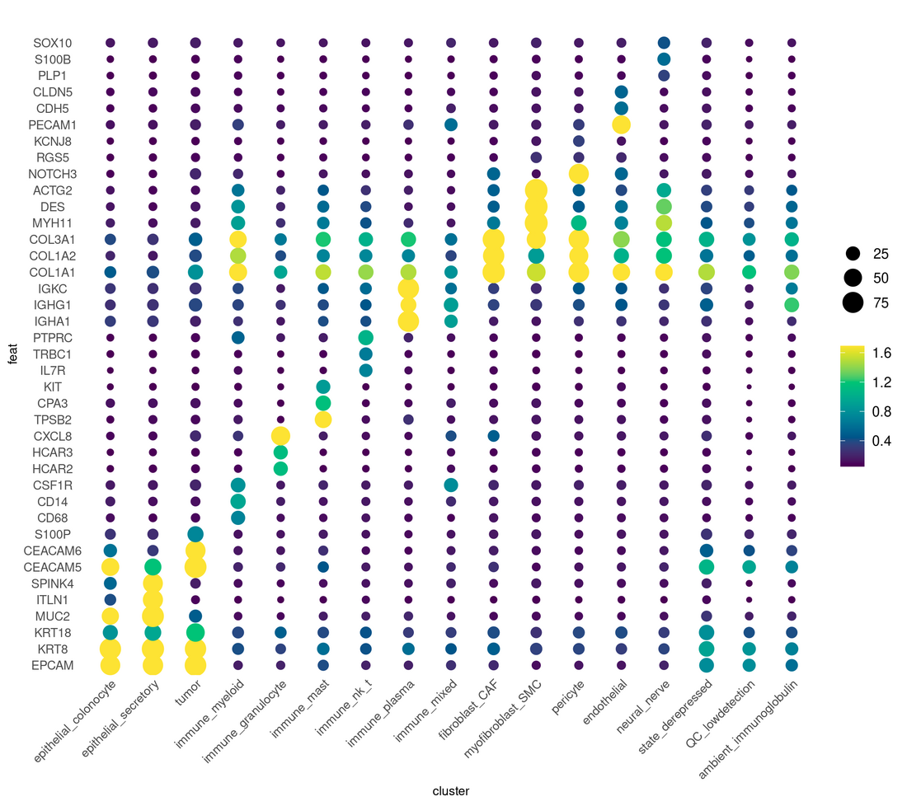
heat_genes <- unique(markers_de[order(cluster, ranking)][
, head(.SD, 2), by = cluster]$feats)
plotMetaDataHeatmap(g_cosmx, metadata_cols = "cell_type_broad",
selected_feats = heat_genes,
expression_values = "normalized",
show_values = "zscores_rescaled",
custom_cluster_order = CELL_TYPES,
x_text_angle = 45, x_text_size = 8,
y_text_size = 6)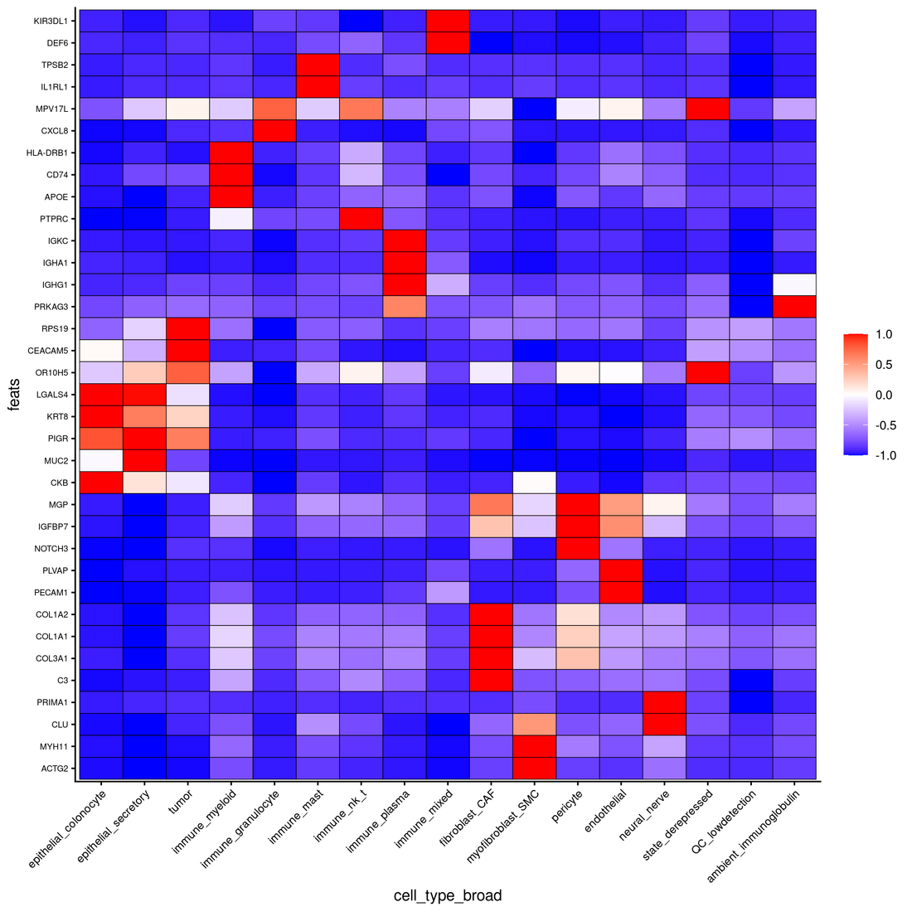
cell_type_counts <- cell_metadata[, .(cells = .N), by = .(label = as.character(cell_type))]
cell_type_counts[, pct_of_cells := round(100 * cells / sum(cells), 2)]
setorder(cell_type_counts, -cells)
cell_type_counts[, label := factor(label, levels = rev(label))]
ggplot(cell_type_counts, aes(label, cells, fill = label)) +
geom_col(width = 0.75) +
scale_fill_manual(values = CELL_TYPE_COLORS, drop = FALSE, na.value = "white",
guide = "none") + coord_flip() +
geom_text(aes(label = sprintf("%s (%.1f%%)",
formatC(cells, big.mark = ",", format = "d"),
pct_of_cells)), hjust = -0.06, size = 2.4) +
scale_y_continuous(expand = expansion(mult = c(0, 0.22))) +
labs(x = NULL, y = "cells", subtitle = "cells per cell type") + plot_theme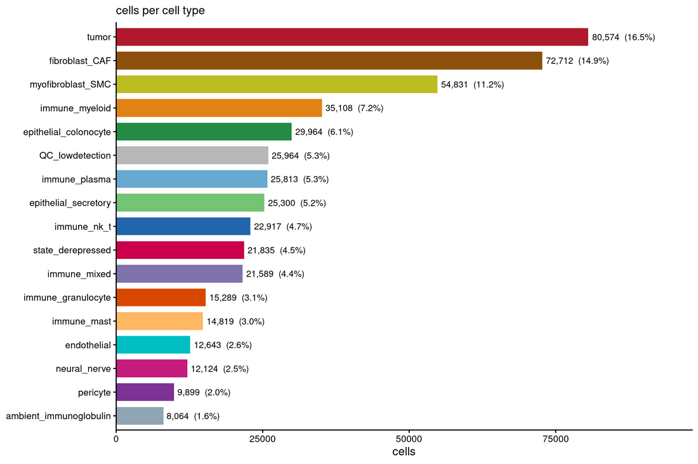
10 Full annotated slide
p_umap_cell_type <- plotUMAP(g_cosmx, cell_color = "cell_type_broad",
cell_color_code = CELL_TYPE_COLORS,
point_size = 0.25, point_alpha = 0.4,
point_shape = "border", point_border_stroke = 0,
show_center_label = FALSE,
show_plot = FALSE, return_plot = TRUE,
save_plot = FALSE)
p_umap_cell_type <- p_umap_cell_type +
guides(fill = guide_legend(override.aes = list(alpha = 1, size = 3)),
colour = guide_legend(override.aes = list(alpha = 1, size = 3)))
GiottoVisuals::all_plots_save_function(g_cosmx, p_umap_cell_type,
default_save_name = "UMAP",
base_width = 8, base_height = 6.4)
print(p_umap_cell_type)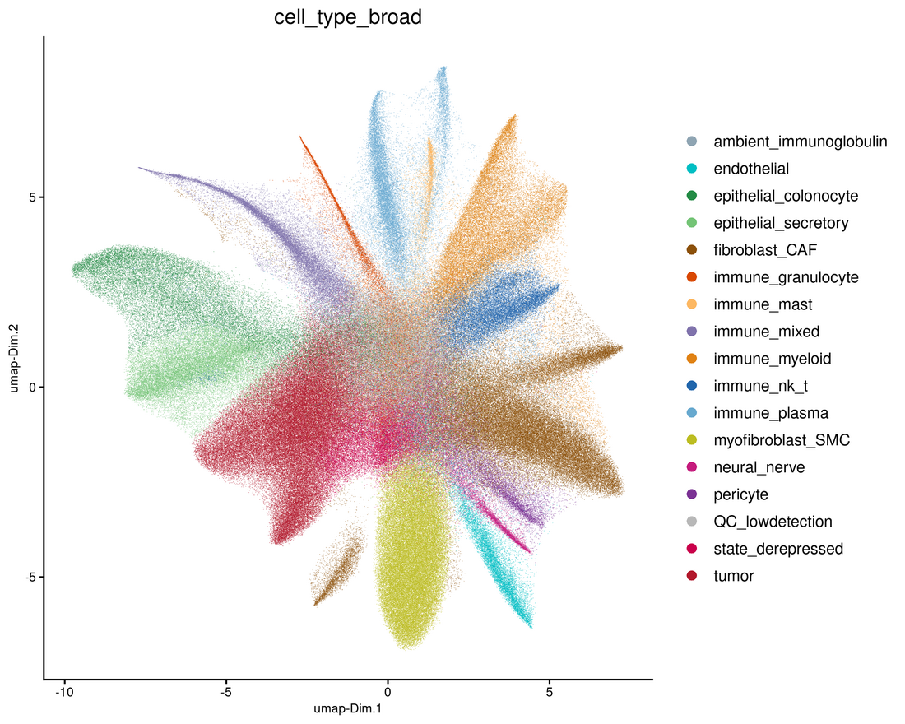
spatPlot2D(
g_cosmx, cell_color = "cell_type_broad",
cell_color_code = CELL_TYPE_COLORS,
point_size = 0.25, point_shape = "border",
point_border_stroke = 0, coord_fix_ratio = 1,
title = sprintf("%s cells | %d clusters | %d cell types",
format(nrow(cell_metadata), big.mark = ","),
length(CLUS_LEVELS), length(CELL_TYPES)),
background_color = "white")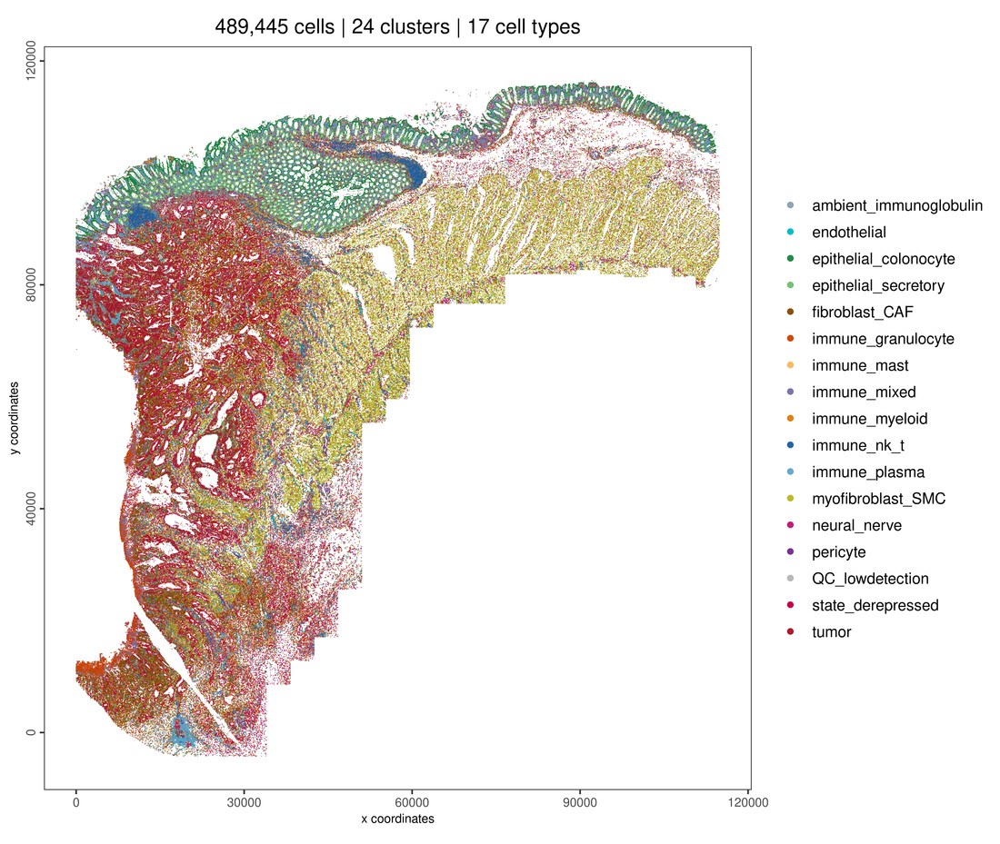
The annotation was never given spatial information, so the histology above is an independent check on it.
cell_type_plots <- lapply(CELL_TYPES, function(cell_type)
spatPlot2D(g_cosmx, cell_color = "cell_type_broad",
cell_color_code = CELL_TYPE_COLORS,
select_cell_groups = cell_type, show_other_cells = TRUE,
other_cell_color = "#ECECEC", other_point_size = 0.06,
point_size = 0.18, point_shape = "border",
point_border_stroke = 0, coord_fix_ratio = 1,
show_legend = FALSE, title = cell_type, background_color = "white",
show_plot = FALSE, return_plot = TRUE, save_plot = FALSE))
p_facets <- plot_grid(plotlist = cell_type_plots, ncol = 5)
GiottoVisuals::all_plots_save_function(g_cosmx, p_facets,
default_save_name = "spatPlot2D",
base_width = 11, base_height = 9)
print(p_facets)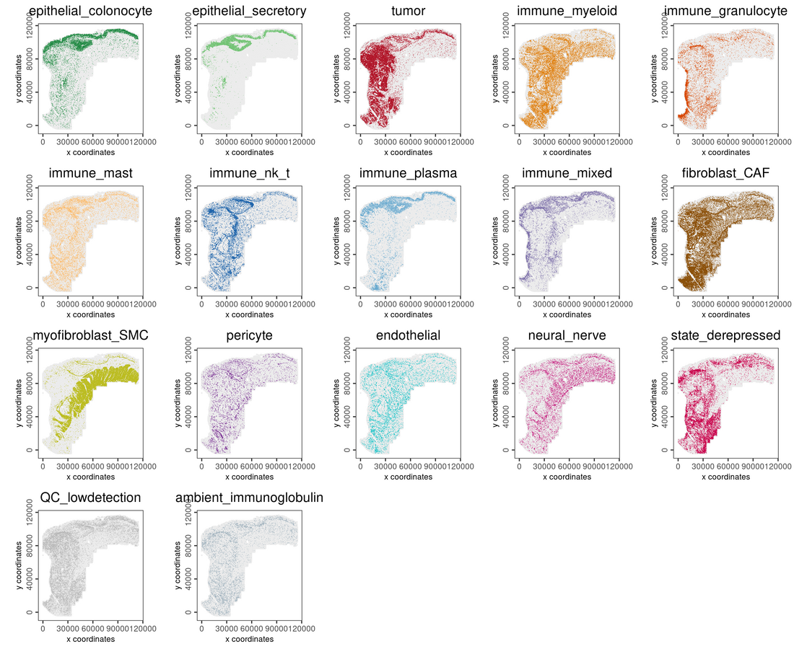
11 Segmentation boundaries
ZOOM_UM <- 1024
side <- ZOOM_UM / 0.12028 # px2um for this instrument
# center the zoom on the most cell-dense 1,024 um square of the slide
cell_locs <- getSpatialLocations(g_cosmx, output = "data.table")
densest <- cell_locs[!is.na(sdimx), .N, by = .(bx = floor(sdimx / side),
by_ = floor(sdimy / side))][
order(-N)]
cx <- (densest$bx[1] + 0.5) * side
cy <- (densest$by_[1] + 0.5) * side
g_zoom <- subsetGiottoLocs(g_cosmx,
x_min = cx - side / 2, x_max = cx + side / 2,
y_min = cy - side / 2, y_max = cy + side / 2)
spatInSituPlotPoints(
g_zoom,
polygon_feat_type = "cell",
show_polygon = TRUE,
polygon_fill = "cell_type_broad",
polygon_fill_as_factor = TRUE,
polygon_fill_code = CELL_TYPE_COLORS,
polygon_color = "gray30",
polygon_line_size = 0.06,
background_color = "white")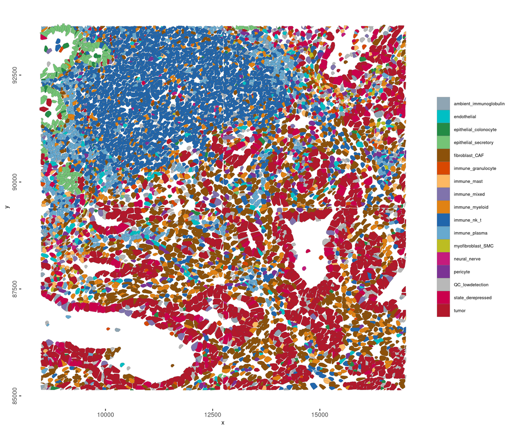
12 Spatial neighborhood composition
Each cell is linked to its 20 nearest neighbors in space, and the
number of contacts between each pair of cell types is compared against a
null where the labels are shuffled. The network is stored in the vault
as an edge store, which is what cellProximityEnrichment()
reads.
g_cosmx <- createSpatialNetwork(g_cosmx, name = "knn_network",
method = "kNN", k = 20, verbose = FALSE)
proximity <- cellProximityEnrichment(
g_cosmx,
cluster_column = "cell_type_broad",
spatial_network_name = "knn_network",
number_of_simulations = 100,
set_seed = TRUE, seed_number = SEED)
proximity_res <- proximity$enrichm_res
saveGiotto(g_cosmx, name = "proximity", overwrite = TRUE, verbose = FALSE)Each snapshot saved in this tutorial can be reloaded by
name: pca (section 6), processed
(section 7), annotated (section 9) and
proximity (section 12). A snapshot records only the R-side
object; the matrix, polygons and edges stay as parquet in the vault, so
a reload re-attaches them rather than rebuilding.
# uncomment below to reload the proximity snapshot
# g_cosmx <- loadGiotto(VAULT, name = "proximity", verbose = FALSE)
cellProximityHeatmap(
g_cosmx, CPscore = proximity, order_cell_types = TRUE, scale = TRUE)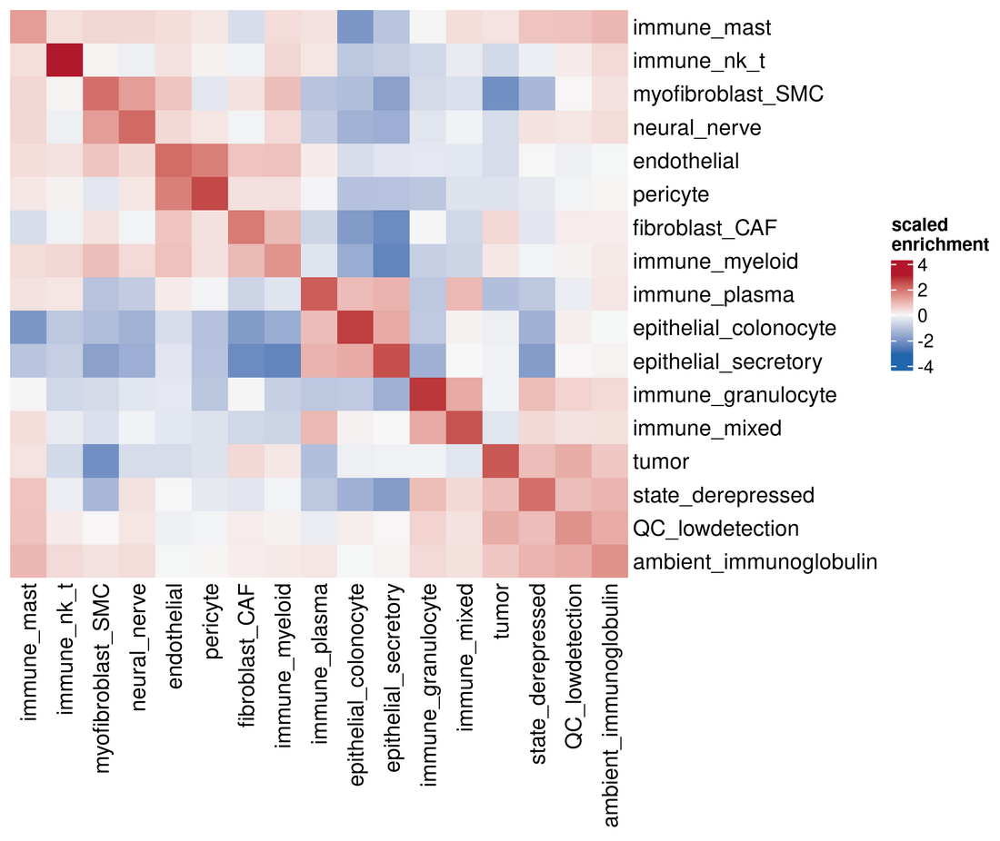
proximity_top <- proximity
proximity_top$enrichm_res <- proximity_res[
order(-abs(enrichm))][seq_len(min(20, .N))]
cellProximityBarplot(
g_cosmx, CPscore = proximity_top, min_orig_ints = 1000,
min_sim_ints = 1000, p_val = 0.01)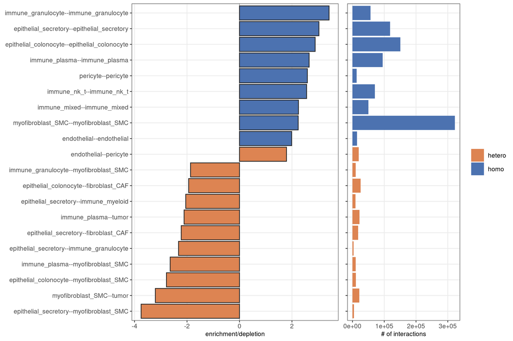
cellProximityNetwork(
g_cosmx, CPscore = proximity, remove_self_edges = TRUE,
only_show_enrichment_edges = TRUE, layout = "Fruchterman",
node_size = 5, node_text_size = 5, node_color_code = CELL_TYPE_COLORS)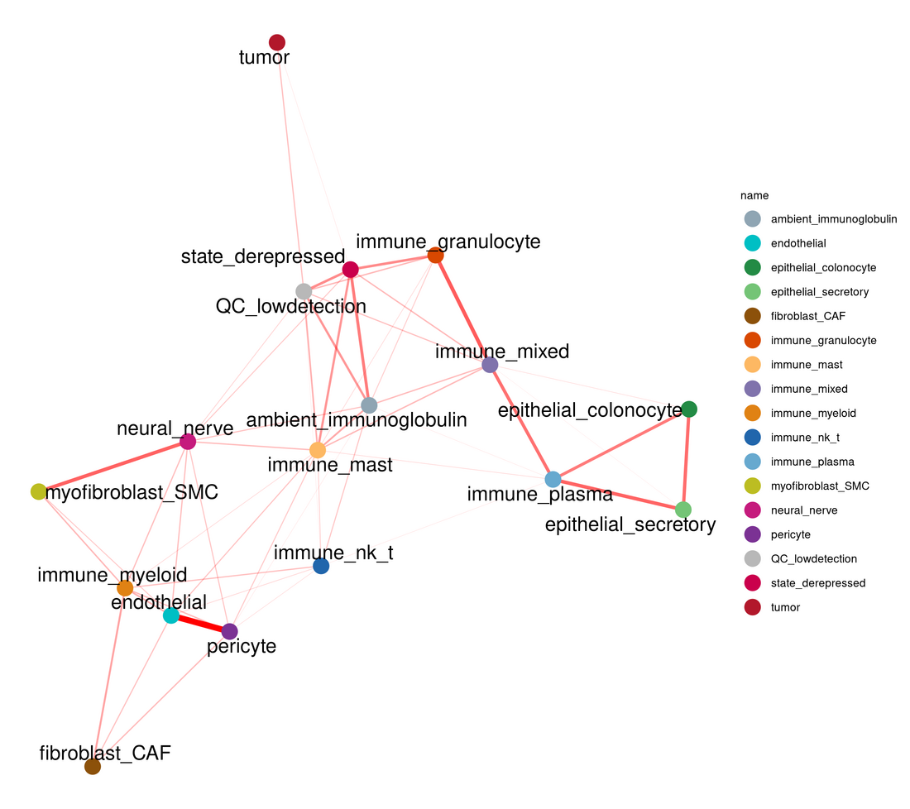
13 Session information
## R version 4.5.2 (2025-10-31)
## Platform: x86_64-pc-linux-gnu
## Running under: AlmaLinux 8.10 (Cerulean Leopard)
##
## Matrix products: default
## BLAS/LAPACK: FlexiBLAS NETLIB; LAPACK version 3.12.0
##
## locale:
## [1] LC_CTYPE=en_US.UTF-8 LC_NUMERIC=C
## [3] LC_TIME=en_US.UTF-8 LC_COLLATE=en_US.UTF-8
## [5] LC_MONETARY=en_US.UTF-8 LC_MESSAGES=en_US.UTF-8
## [7] LC_PAPER=en_US.UTF-8 LC_NAME=C
## [9] LC_ADDRESS=C LC_TELEPHONE=C
## [11] LC_MEASUREMENT=en_US.UTF-8 LC_IDENTIFICATION=C
##
## time zone: America/New_York
## tzcode source: system (glibc)
##
## attached base packages:
## [1] stats graphics grDevices utils datasets methods base
##
## other attached packages:
## [1] future_1.70.0 terra_1.8-93 cowplot_1.2.0
## [4] ggplot2_4.0.2 data.table_1.18.4 GiottoDisk_0.0.0.3
## [7] GiottoVisuals_0.2.16 Giotto_4.3.0 GiottoClass_0.7.2
## [10] arrow_25.0.0
##
## loaded via a namespace (and not attached):
## [1] RColorBrewer_1.1-3 shape_1.4.6.1
## [3] wk_0.9.4 jsonlite_2.0.0
## [5] magrittr_2.0.5 magick_2.9.0
## [7] farver_2.1.2 rmarkdown_2.30
## [9] GlobalOptions_0.1.2 ragg_1.5.0
## [11] vctrs_0.7.1 Cairo_1.7-0
## [13] memoise_2.0.1 GiottoUtils_0.2.6
## [15] htmltools_0.5.9 S4Arrays_1.10.1
## [17] BiocNeighbors_2.4.0 SparseArray_1.10.8
## [19] sass_0.4.10 parallelly_1.47.0
## [21] bslib_0.10.0 htmlwidgets_1.6.4
## [23] plotly_4.12.0 cachem_1.1.0
## [25] igraph_2.2.1 iterators_1.0.14
## [27] lifecycle_1.0.5 pkgconfig_2.0.3
## [29] rsvd_1.0.5 Matrix_1.7-4
## [31] R6_2.6.1 fastmap_1.2.0
## [33] clue_0.3-66 MatrixGenerics_1.22.0
## [35] digest_0.6.39 colorspace_2.1-2
## [37] S4Vectors_0.48.0 dqrng_0.4.1
## [39] irlba_2.3.7 textshaping_1.0.4
## [41] GenomicRanges_1.62.1 beachmat_2.26.0
## [43] filelock_1.0.3 labeling_0.4.3
## [45] progressr_0.18.0 httr_1.4.8
## [47] polyclip_1.10-7 abind_1.4-8
## [49] compiler_4.5.2 doParallel_1.0.17
## [51] bit64_4.6.0-1 withr_3.0.2
## [53] S7_0.2.1 backports_1.5.0
## [55] BiocParallel_1.44.0 viridis_0.6.5
## [57] ggforce_0.5.0 R.utils_2.13.0
## [59] MASS_7.3-65 rappdirs_0.3.4
## [61] DelayedArray_0.36.0 rjson_0.2.23
## [63] cosmxscan_0.1.0 bluster_1.20.0
## [65] gtools_3.9.5 tools_4.5.2
## [67] otel_0.2.0 future.apply_1.20.0
## [69] R.oo_1.27.1 glue_1.8.0
## [71] dbscan_1.2.4 grid_4.5.2
## [73] checkmate_2.3.4 cluster_2.1.8.3
## [75] generics_0.1.4 gtable_0.3.6
## [77] R.methodsS3_1.8.2 tidyr_1.3.2
## [79] metapod_1.18.0 BiocSingular_1.26.1
## [81] tidygraph_1.3.1 ScaledMatrix_1.18.0
## [83] XVector_0.50.0 BiocGenerics_0.56.0
## [85] tilework_1.0.0 RcppAnnoy_0.0.23
## [87] foreach_1.5.2 ggrepel_0.9.6
## [89] pillar_1.11.1 limma_3.66.0
## [91] RcppHNSW_0.6.0 circlize_0.4.16
## [93] dplyr_1.2.0 tweenr_2.0.3
## [95] lattice_0.22-7 bit_4.6.0
## [97] tidyselect_1.2.1 ComplexHeatmap_2.26.1
## [99] locfit_1.5-9.12 SingleCellExperiment_1.32.0
## [101] scuttle_1.20.0 knitr_1.51
## [103] gridExtra_2.3 IRanges_2.44.0
## [105] Seqinfo_1.0.0 edgeR_4.8.2
## [107] SummarizedExperiment_1.40.0 scattermore_1.2
## [109] stats4_4.5.2 xfun_0.56
## [111] graphlayouts_1.2.3 Biobase_2.70.0
## [113] statmod_1.5.1 matrixStats_1.5.0
## [115] lazyeval_0.2.2 yaml_2.3.12
## [117] evaluate_1.0.5 codetools_0.2-20
## [119] ggraph_2.2.2 tibble_3.3.1
## [121] colorRamp2_0.1.0 cli_3.6.6
## [123] uwot_0.2.4 reticulate_1.45.0
## [125] systemfonts_1.3.1 jquerylib_0.1.4
## [127] dichromat_2.0-0.1 Rcpp_1.1.1-1.1
## [129] globals_0.19.1 png_0.1-8
## [131] parallel_4.5.2 assertthat_0.2.1
## [133] scran_1.38.1 listenv_0.10.1
## [135] SpatialExperiment_1.20.0 viridisLite_0.4.3
## [137] scales_1.4.0 crayon_1.5.3
## [139] purrr_1.2.1 GetoptLong_1.0.5
## [141] rlang_1.2.0